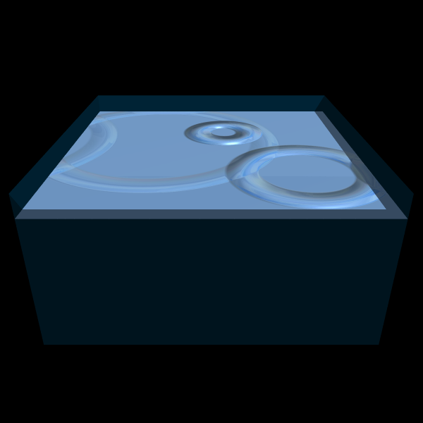
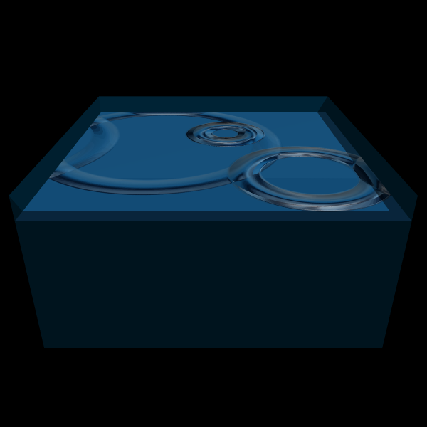
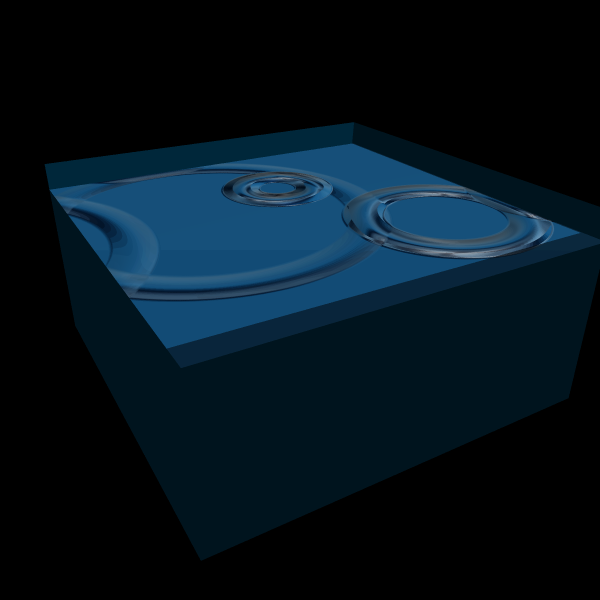

Chrome Mapping
Chrome mapping was implemented to give the water surface an extra bit of colour and shinyness.
Shown below is a water surface with two different chrome maps. Note the view-dependance, unlike texture mapping.

 
The chrome maps used, courtesy of the Gimp:
Prev
Next